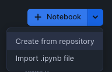

This guide demonstrates how to use OpenFE, an open-source package, that can automatically generate features and save them into the Snowflake Feature Store. These features can then be used to train a model, potentially improving its accuracy. This process can save data scientists valuable time compared to creating features manually.
The workflow for this tutorial is shown in the following diagram.

Prerequisites
- Familiarity Snowpark Container Services
- General machine learning concepts
What You'll Learn
- How to create features based on data insights
- Techniques for training models using the Feature Store
- Deploying models built using open source or Snowflake.ML packages
- Different ways to call a model
What You'll Need
- Access to a Snowflake account
- Basic familiarity with SQL and Python
- Access to download
.ipynbfiles from getting-started-with-automl-openfe-and-autogluon Git Repo
What You'll Build
- A set of features based on data insights
- Skills for training a model using derived features saved in Feature Store
- The basics of deploying the model as a service
- Fundamental concepts for inference the model
We will use the Boston Housing dataset, which was created from US Census data in the late 1970s to predict the median home value.
This is a small dataset with only 506 rows and is used for demonstration purposes to show how features can be created.
Download the csv file and save it locally, as we will use the Snowflake Snowsight UI to upload the file.
Navigate to the Create -> Table -> From File in the UI 
Select the csv file for import, this is the recently released update to the Snowflake import, click the load button and the data will be loaded into the specified table.

My table is called DEMO_BOSTON_HOUSING and you can look at the imported data:
select * from DEMO_BOSTON_HOUSING;
Now that we have the data, we can use the example OpenFE Notebook to create features.
This notebook executes as a Snowflake Container Notebook so it is secure and has access to the data we just uploaded.
If you are not familiar with Snowflake Container Notebooks, this quickstart provides a great starting point.
Our notebook will need External Access Integration, and this does require AccountAdmin to set up, so that the OpenFE package can be downloaded.
Once running, we can import the Notebook, we shouldn't need to modify much of the code, the first few cells contain variables for this purpose.
 Click in the Plus sign in the Notebooks panel in Snowsight to import.
Step through each cell and execute until you reach Cell 12 Create the sql for feature store this is where we start to save the features that OpenFE created into the Feature Store.
In the Snowflake Feature Store, a feature view has now been created !
Navigate to the AI & ML -> Features within Snowsight, you will see the Feature View that the Notebook created.

Notice the name of the Notebook that created this view is in the description, this was set up in one of the first few cells, you can modify that to maybe include the user who executed the Notebook.
Click on the Boston_OpenFE_View, this will show the features created and the textual explanation of the feature.

We can use Lineage to see where this derived feature came from, by clicking Lineage -> Upstream
 This shows (in a simple example) that it came from the
This shows (in a simple example) that it came from the Demo_Boston_Housing table we created earlier.
So we are able to quickly see that the feature came from a specific table and how it was created.
Now that the features have been saved into the Feature Store, any machine learning tools can be used, so we have a few options!
We could use an Open Source package to train a model and many packages are available to do this, an example Notebook using AutoGluon is available from the Git Repo.
We could also use the Snowflake.ML package, which is integrated into the Snowflake environment and we provide an example notebook in the Git Repo.
Either option will result in a model being created and registered in the Model Registry.
For this tutorial, I'm going to use the Snowflake.ML package to train the model.
Using the Git Repo links from the Decision Time section above, retrieve the Notebook you have chosen and upload into Snowflake Container Services. In a similar approach to the OpenFE notebook the first few cells have parameters for training that you might want to modify.
Execute each cell until you reach the Model Registry section in the notebook. Here we define the name of the model, we also have set enable_monitoring to False, as a timestamp is not one of the features, but if you would like to monitor the model, an excellent overview can be found here.
Once the model is registered, it can be referenced using the version tag LAST and after you have created a few models, you will find this really helpful to be able to always get the latest model or reference a specific version.
Using the Snowsight UI AI & ML -> Model, click on the Model that was registered (Boston_Model_Snowflake) the functions to call the model will be shown:

When the log_model API was called, the Predict and Explain functions were created. We can use these functions to get a prediction or explain the features that had the most impact on the prediction, refer to the links for details about the function calling arguments and background on the techniques used to explain the prediction.
The models and functions can also be shown using SQL:
SELECT
*
FROM your-database.INFORMATION_SCHEMA.MODEL_VERSIONS
where model_name like '%BOSTON_MODEL%';
If you would like to call the functions then jump ahead to the Invoke the Model section, otherwise we can deploy the model using a Snowpark Container Services that would allow either a Snowflake.ML or Open Source model to be called as an endpoint or directly in SQL.
Review the cell labeled spcs deployment details, this defines the instance family (number of cpu's / gpu's and memory) and the number of instances, the compute pool is then created and the service created. Notice on the create_service call, ingress_enabled is set to True, so this endpoint will be exposed to the internet, however a valid token will be required to access the endpoint.
If you are not familiar with Snowflake OAuth, here is an excellent overview.
Creating the compute pool and building the service is a one time operation and it will take several minutes (maybe 20) but the notebook output will keep you updated on progress.
Once the model is deployed as a service, the service endpoint will be shown.
When the model was trained if an Open Source package was downloaded and installed, then you will need to deploy that model as a service (see Deploy the Model)
If you jumped ahead and want to call the function, you can use the generated SQL or Python from earlier.
The Notebook cell make predictions using model deployed to SPCS, shows how to invoke the function, but what about an external request (remember we set ingress_enabled=True) the Notebook Remote_SPCS_Call
Using an external call requires authentication to set up but once this is done calling the model is easy and secure.
The Notebook has two examples, one using the Python requests HTTP library and the other using the Snowpark package
If the model was deployed as a service, then the compute pool and service will automatically suspend, but you can also issue a SQL call as well:
alter compute pool INFERENCE_CP suspend;
alter service INFERENCE_SERVICE suspend;
Suspending the resources will enable them to be started again, but if you do not want them you can also drop them:
drop service INFERENCE_SERVICE;
drop compute pool INFERENCE_CP;
The data that was imported at the beginning of the tutorial can also be deleted using a drop on the table, use this SQL to find the table names.
show tables like '%DEMO_BOSTON_HOUSING%';
The model can be dropped from the model registry:
drop model BOSTON_MODEL;
Features that we created in the beginning can also be dropped, clicking on the action button (3 dots) on the FeatureView in the Snowsight is the quickest way.
You have done it, congratulations!
This tutorial went through a workflow creating features from data, saving them into the Feature Store and then using the new features to train a open source and Snowflake.ML model.
Lastly the model was deployed within Snowflake and we showed how to call the model for inference.
All of these steps executed within Snowflake !
What You Learned
- How to create features and save them into the Feature Store
- Using Open Source and Snowflake.ML packages to train a model
- How to deploy a model within Snowflake
- Invoking a model to get an inference